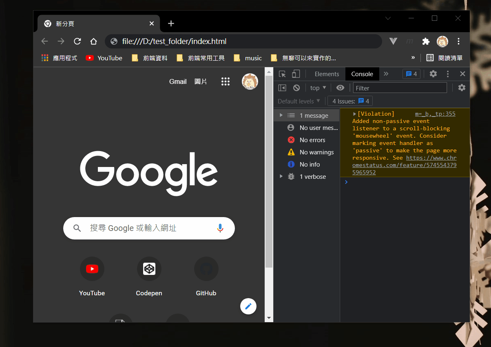

偶然間學到的，所以紀錄一下。
懶人包
提醒：這兩個屬性都是基於 src 引入外部資源用的，如果是 inline script 的話沒有任何作用。
首先解釋一下在沒有 async 跟 defer 時的流程：
- 停止解析
- 根據路徑發 request
- 等待 response
- 拿到 response 後，執行腳本內容
- 執行完畢，繼續向下解析
async
一看名字就知道是用「非同步」來載入外部資源，所以不需要等待 response。
這邊舉個例子：
1 | <!-- index.html --> |
因為不是非同步，所以到 <script src="http://localhost:5000/"></script> 就要等 3 秒，後面的東西都不會被執行。
加上 async 就不一樣了：
1 | <!-- index.html --> |

雖然會轉圈圈但其實瀏覽器並沒有「阻塞」。
defer
顧名思義就是「延遲」，延遲什麼？把腳本延遲到 DOM 元素被解析完後再執行。（嚴謹來說是 DOMContentLoaded 以前，但我覺得知道這樣就夠了）
如果沒有延遲，一碰到 <script> 就會直接執行，這個時候如果 DOM 還沒被解析你就抓不到元素：
1 | // getElement.js |
1 | <body> |
加上 defer 就可以確保 DOM 元素解析完才執行：
1 | <body> |
那兩個一起用代表什麼？
不用想太複雜，就是同時套用兩個邏輯：
- 用非同步去發 request，不要停止解析
- 如果拿到資料後 DOM 還沒解析完，就等到解析完後再執行
所以簡單來說，一個是用來決定「要不要先停止解析」，另一個是決定「要什麼時候才執行腳本」。